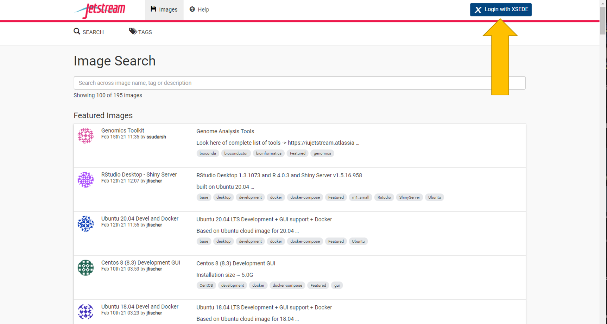
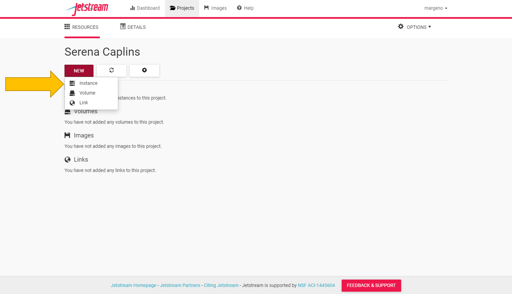
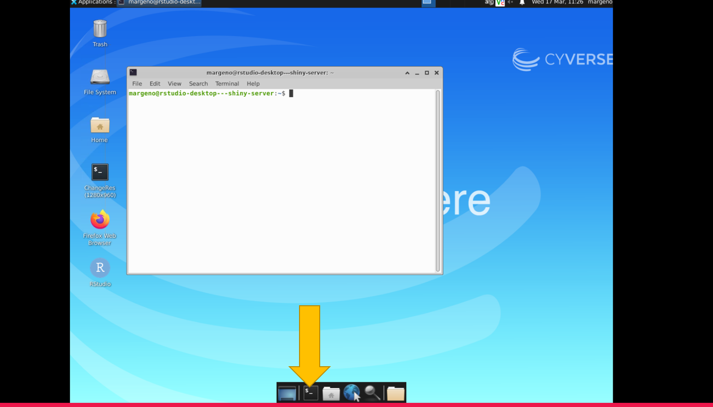

Chapter 2 Week 1- Welcome!
Welcome to Marine Genomics Fall 2021 at Cal State LA!
You will find the lecture for week one here
2.1 Introduction to shell computing via the data carpentry tutorial
We will be following the data carpentry tutorial (Copyright 2016 @ Software Carpentry) “Introduction to the command line for genomics.” We have made some modifications to the data carpentry tutorial to fit our course.
What is a shell and why should I care?
A shell is a computer program that presents a command line interface which allows you to control your computer using commands entered with a keyboard instead of controlling graphical user interfaces (GUIs) with a mouse/keyboard combination.
There are many reasons to learn about the shell:
- Many bioinformatics tools can only be used through a command line interface, or have extra capabilities in the command line version that are not available in the GUI. This is true, for example, of BLAST, which offers many advanced functions only accessible to users who know how to use a shell.
- The shell makes your work less boring. In bioinformatics you often need to do the same set of tasks with a large number of files. Learning the shell will allow you to automate those repetitive tasks and leave you free to do more exciting things.
- The shell makes your work less error-prone. When humans do the same thing a hundred different times (or even ten times), they’re likely to make a mistake. Your computer can do the same thing a thousand times with no mistakes.
- The shell makes your work more reproducible. When you carry out your work in the command-line (rather than a GUI), your computer keeps a record of every step that you’ve carried out, which you can use to re-do your work when you need to. It also gives you a way to communicate unambiguously what you’ve done, so that others can check your work or apply your process to new data.
- Many bioinformatic tasks require large amounts of computing power and can’t realistically be run on your own machine. These tasks are best performed using remote computers or cloud computing, which can only be accessed through a shell.
In this lesson you will learn how to use the command line interface to move around in your file system.
2.2 How to access the shell
For this course we will be using the shell in our Jetstream allocation through xsede. Jetstream is a cloud computing resource for which we have been allocated resources for the purposes of this course. Below is a guide for accessing and using jetstream.
In jetstream we launch what they call an “instance” which is a small allocation that specifies how much memory you need and reflects how much computing you might do (we’ll guide you through this).
You’ll find the jetstream login here
Navigate to the login with xsede tab in the upper right


This will redirect you to the xsede login page. Your organization should say xsede.
Click continue
The username for our course is margeno. The password will be given out in class. If you missed it please contact Serena Caplins (sacaplins@ucdavis.edu) or Maddie Armstrong (mlarmstrong@ucdavis.edu)

Once you’ve logged in you should be redirected to jetstream.
You now need to create your own projects folder. This is where you will carry out all of your analyses for the course. Everyone will get one project folder. So please only make one. If you make a mistake you can delete it and start again.


Once you have a project folder we can create our first instance. Go to the “New” tab and select “instance.”
Select the RStudio Desktop Shiny Server instance

Select a small instance size if it isn’t already selected (should be the default).
It will take several minutes (5-10) to build our instance. Once it says active it will take a few more minutes to deploy.

Once it’s ready to go you should see several actions on the right side of the screen including report, suspend, stop, etc.
Select open web desktop.
You should see something like the little desktop above. It’s not pretty but this is where we’ll be spending a lot of time.
Select the black box on the bottom menu bar to access the command line. It will open a new window that has the $ prompt.

2.3 Best practices for Jetstream
Once you launch your instance and it’s “active” it’s ready to use.
When you’re done coding it’s best to close your jetstream desktop and projects folder browser window. If you are going to step away from jetstream for a while (say over the weekend), it’s best to ‘Shelve’ or ‘Suspend’ your instance.
Once you’re ready to code again you just have to select ‘Resume’ to start your instance again. This will take a few minutes.
If in doubt of whether you should ‘shelve/suspend’ or keep active, it’s our recommendation to shelve/suspend your instance. This frees up resources for other users and should reduce the likelihood of your active instance freezing up and being inaccessible.
If you get an error while trying to log in or open the web shell or web desktop, follow these tips:
- log out of the jetstream home page and log back in
- relaunch your instance
- reboot your instance
If those options fail then it is likely best to delete the instance and relaunch a new instance. This will result in you losing your data or work, but that should not be terribly detrimental to the course as everything resets with new data each week.
2.4 Week 1 Objectives
Questions to Answer:
How can I perform operations on files outside of my working directory?
What are some navigational shortcuts I can use to make my work more efficient?
Main Tasks:
Use a single command to navigate multiple steps in your directory structure, including moving backwards (one level up).
Perform operations on files in directories outside your working directory.
Work with hidden directories and hidden files.
Interconvert between absolute and relative paths.
Employ navigational shortcuts to move around your file system.
2.6 Shortcut: Tab Completion
Typing out file or directory names can waste a lot of time and it’s easy to make typing mistakes. Instead we can use tab complete as a shortcut. When you start typing out the name of a directory or file, then hit the Tab key, the shell will try to fill in the rest of the directory or file name.
Return to your home directory:
$ cdthen enter
$ cd Mar<tab>The shell will fill in the rest of the directory name for MarineGenomics.
Now change directories to Week1 in data in MarineGenomics
$ cd MarineGenomics
$ cd data
$ cd Week1Using tab complete can be very helpful. However, it will only autocomplete a file or directory name if you’ve typed enough characters to provide a unique identifier for the file or directory you are trying to access.
For example, if we now try to list the files which names start with SR by using tab complete:
$ ls SR<tab.The shell auto-completes your command to SRR6805880_, because all file names in the directory begin with this prefix. When you hit Tab again, the shell will list the possible choices.
$ ls SRR68<tab><tab>SRR6805880_1.fastq SRR6805880_2.fastqTab completion can also fill in the names of programs, which can be useful if you remember the beginning of a program name.
$ pw<tab><tab>pwck pwconv pwd pwdx pwunconvDisplays the name of every program that starts with pw.
2.7 Summary & Key Points
We now know how to move around our file system using the command line. This gives us an advantage over interacting with the file system through a GUI as it allows us to work on a remote server, carry out the same set of operations on a large number of files quickly, and opens up many opportunities for using bioinformatic software that is only available in command line versions.
In the next few episodes, we’ll be expanding on these skills and seeing how using the command line shell enables us to make our workflow more efficient and reproducible.
The shell gives you the ability to work more efficiently by using keyboard commands rather than a GUI.
Useful commands for navigating your file system include: ls, pwd, and cd.
Most commands take options (flags) which begin with a -.
Tab completion can reduce errors from mistyping and make work more efficient in the shell.
2.9 Moving around the file system
We’ve learned how to use pwd to find our current location within our file system. We’ve also learned how to use cd to change locations and ls to list the contents of a directory. Now we’re going to learn some additional commands for moving around within our file system.
Use the commands we’ve learned so far to navigate to the MarineGenomics/data/Week1 directory, if you’re not already there.
$ cd
$ cd MarineGenomics
$ cd Week1What if we want to move back up and out of this directory and to our top level directory? Can we type cd MarineGenomics? Try it and see what happens.
$ cd MarineGenomics-bash: cd: MarineGenomics: No such file or directoryYour computer looked for a directory or file called MarineGenomics within the directory you were already in. It didn’t know you wanted to look at a directory level above the one you were located in.
We have a special command to tell the computer to move us back or up one directory level.
$ cd ..Now we can use pwd to make sure that we are in the directory we intended to navigate to, and ls to check that the contents of the directory are correct.
$ pwd
home/margeno/MarineGenomics$ ls
dataFrom this output, we can see that .. did indeed take us back one level in our file system.
You can chain these together like so:
$ ls ../../prints the contents of /home.
2.11 Examining the contents of other directories
By default, the ls commands lists the contents of the working directory (i.e. the directory you are in). You can always find the directory you are in using the pwd command. However, you can also give ls the names of other directories to view. Navigate to your home directory if you are not already there.
$ cdThen enter the command:
$ ls MarineGenomics
dataThis will list the contents of the MarineGenomics directory without you needing to navigate there.
The cd command works in a similar way.
Try entering:
$ cd
$ cd MarineGenomics/week1This will take you to the MarineGenomics directory without having to go through the intermediate directory.
Navigating practice
Navigate to your home directory. From there, list the contents of the Week1 directory.
$ cd
$ ls MarineGenomics/Week1
SRR6805880_1.fastq SRR6805880_2.fastq2.12 Full vs Relative Paths
The cd command takes an argument which is a directory name. Directories can be specified using either a relative path or a full absolute path. The directories on the computer are arranged into a hierarchy. The full path tells you where a directory is in that hierarchy.
Navigate to the home directory, then enter the pwd command.
$ cd
$ pwdYou should see:
/home/margenoThis is the full name of your home directory. This tells you that you are in a directory called margeno, which sits inside a directory called home which sits inside the very top directory in the hierarchy. The very top of the hierarchy is a directory called / which is usually referred to as the root directory. So, to summarize: margeno is a directory in home which is a directory in /. More on root and home in the next section.
Now enter the following command:
$ cd /home/margeno/MarineGenomics/Week1This jumps several levels to the Week1 directory. Now go back to the home directory.
$ cd You can also navigate to the Week1 directory using:
$ cd MarineGenomics/Week1These two commands have the same effect, they both take us to the Week1 directory. The first uses the absolute path, giving the full address from the home directory. The second uses a relative path, giving only the address from the working directory. A full path always starts with a /. A relative path does not.
A relative path is like getting directions from someone on the street. They tell you to “go right at the stop sign, and then turn left on Main Street.” That works great if you’re standing there together, but not so well if you’re trying to tell someone how to get there from another country. A full path is like GPS coordinates. It tells you exactly where something is no matter where you are right now.
You can usually use either a full path or a relative path depending on what is most convenient. If we are in the home directory, it is more convenient to enter the full path. If we are in the working directory, it is more convenient to enter the relative path since it involves less typing.
Over time, it will become easier for you to keep a mental note of the structure of the directories that you are using and how to quickly navigate amongst them.
2.14 Key Points
The /, ~, and .. characters represent important navigational shortcuts.
Hidden files and directories start with . and can be viewed using ls -a.
Relative paths specify a location starting from the current location, while absolute paths specify a location from the root of the file system.
2.15 Creature of the Week!

Spirula spirula!